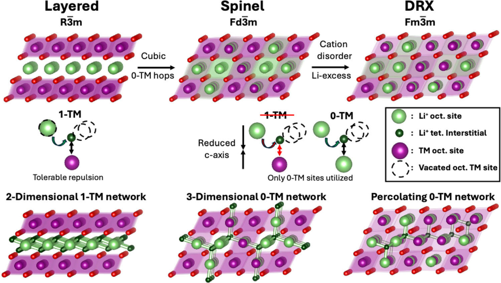

PAPER COMPANION · CATHODES
One hop is easy,
crossing is harder
Follow lithium from a single site to a network.
Explore the visualizationINTERACTIVE MATERIALS SCIENCE
Figures from materials-science papers, rebuilt as 3D models you can turn, scrub and question.
Browse the visualizations
Figure 1 · Hau et al., Adv. Mater. 2025
Figure 1 maps lithium pathways in three structures
The slider scrubs the whole sequence. The first part focuses the paper figure and lifts its 1-TM glyph into three dimensions. The last part moves lithium from its octahedral site, through the tetrahedral site, into a vacant octahedral site. The pathway is schematic and the timing is illustrative.
Figure 1 © 2025 Hau et al. · CC BY 4.0
The paper figure becomes an idealized three-dimensional lithium-ion hop. Once the model has formed, drag or use the arrow keys to rotate it, and Home to reset. The Li⁺, O, TM and Empty site buttons highlight each part of the model.
FOUNDATION · ENERGY
One reaction. Two paths.
Follow the charge, then go inside graphite.
THE IDEA BEHIND FIG.3D
Each companion starts from one published figure and rebuilds it as a model you can turn and question, one idea at a time, with the printed figure beside it.
Every page keeps its sources and says what its model leaves out.
Made by Marc Boyer. About the project